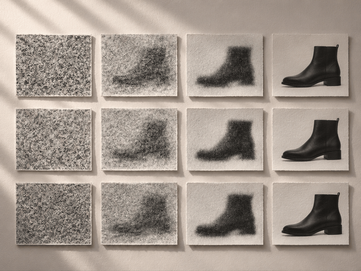
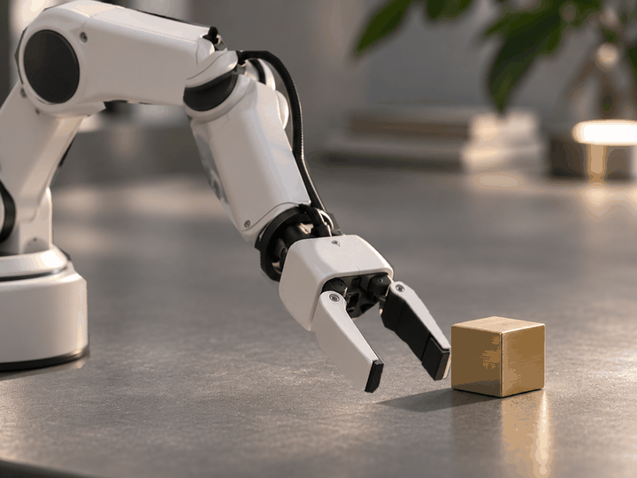

CME 296 — What Am I Buying With Another Denoising Step?
The distinction that stuck with me in diffusion models was between the network and the loop that calls it.
During training, the network learns a denoising prediction at different noise levels. At generation time, a sampler uses those predictions to move from noise toward an image. I can leave the trained network alone and change how many times I call it. That sounds like an implementation detail until I have to decide whether the extra calls are worthwhile.
Ten steps through the same model
The first thing I’d check is what my code means by ten steps. If the model was trained across a long noise schedule, I want ten evaluations that span that schedule. I don’t want to take the first ten updates of a fifty-step run and stop while the image is still very noisy. Both produce ten network calls. Only one is set up to complete the trip back to an image.
I’d also keep the same checkpoint for every column. If my ten-step and fifty-step examples come from different training runs, I can’t tell whether the differences came from the sampler or the models themselves. Using deterministic DDIM and the same starting tensor gives me something I can reproduce. I’d still show several seeds because one starting tensor can make any comparison look more decisive than it is.
A small Fashion-MNIST diffusion model gives a straightforward comparison: deterministic DDIM at 10, 25, and 50 steps. Every row would start from the same initial noise. That way I can follow what happens to a particular sample as I change the step count. If something looks like a boot at 10 steps and a cleaner boot at 50, I can see what the extra work bought me. If the 10-step version already gets the shape right, I can ask whether the remaining difference is worth waiting for.

The middle of the trajectory might tell me more
I’d save a few intermediate frames, at comparable noise levels, as well as the finished image. I want to see when the model commits to the broad shape and what happens after that. Maybe the rough outline is there early and the remaining steps mainly clean up edges. Maybe one of the coarse schedules gives it an ambiguous shape that it never resolves. Those are different reasons for a final sample to look worse.
I’d treat that interpretation as a hypothesis from the pictures. A cleaner outline in a handpicked example isn’t enough to decide which budget I’d use. For a toy dataset I’d check recognizability across a batch, look for classes that rarely appear, and measure the time it takes to generate on the same device at the same batch size. I’d warm up the model before timing it so the first run doesn’t pay setup costs the others avoid.
I’d keep the whole grid. It’s tempting to pick the one seed where the jump from 10 to 50 steps looks dramatic. I’m more curious about the boring cases. How often does the difference barely register? Are there seeds where extra steps leave an equally confusing shape? I’d put timings next to the images so the improvement, when there is one, has a cost attached.
Counting network calls
For the same checkpoint and sampler, a 50-step run with one model evaluation per step uses five times as many evaluations as a 10-step run. For example, at an illustrative eight milliseconds per call, that is 400 milliseconds versus 80 milliseconds spent on model evaluations alone. Neither number is a benchmark. The calculation makes the control question concrete: how far does the arm travel while it is still following the previous plan?
The robot makes me care about the slow cases
On the robot side, I’d want to time one decision at a time. Averaging the time across a big batch might look great in a table, but the gripper has one scene to react to right now. A plan taking a bit longer matters most when the object has moved since the observation was taken.
An experiment I’d like to try in simulation is to nudge the target while the arm is already reaching. Then compare the same policy at two sampling budgets. I’d record how long replanning takes and how far the arm travels before it changes course. The action sequence with the smoothest path from a frozen screenshot might come from the slower sampler. The better response to a moved target could come from the faster one. That’s a trade I could see in the trajectory, not just infer from a stopwatch.
This is also how I’d start thinking about diffusion for robot actions. A prettier shoe can wait. A gripper moving toward an obstacle has to decide when to replan. An action sampler could produce a nicer trajectory in isolation and still be awkward to use if it takes too long to respond to a changed scene. Once the model sits inside a control loop, sampling time becomes part of the behavior I’m measuring. Stanford CME 296
